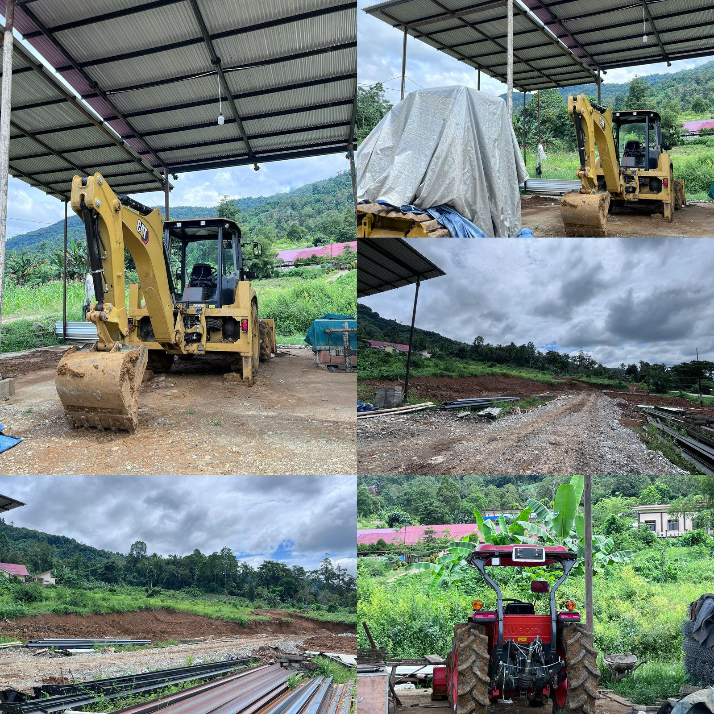

Teknik Kendaraan Ringan merupakan kompetensi keahlian dalam bidang otomotif yang fokus pada perawatan dan
perbaikan kendaraan ringan seperti mobil.
Teknik Komputer dan Jaringan
Rabu, 7 mei 2025 14:40 WITA
Teknik Komputer dan Jaringan merupakan ilmu berbasis Teknologi Informasi dan Komunikasi terkait kemampuan
algoritma, dan pemrograman komputer,
Teknik Alat Berat

Jumat, 25 April 2025 11:18 WITA
Teknik Alat Berat merupakan bidang studi yang fokus pada pemahaman, perawatan, dan operasi alat berat seperti
excavator, bulldozer, grader, dan crane.
Agribisnis Tanaman Perkebunan
Kamis, 8 january 2025 10:56 WITA
Agribisnis tanaman perkebunan merupakan pengelolaan usaha pertanian yang fokus pada tanaman perkebunan,
mulai dari pembibitan,penanaman,pemeliharaan, hingga pemasaran hasil panen.
Agribisnis Pengolahan Hasil Pertanian
Rabu, 7 Mei 2025 16:56 WITA
Agribisnis pengolahan hasil pertanian merupakan bidang studi yang fokus pada pengelolaan dan pengolahan hasil pertanian
dari awal produksi hingga menjadi produk siap konsumsi.